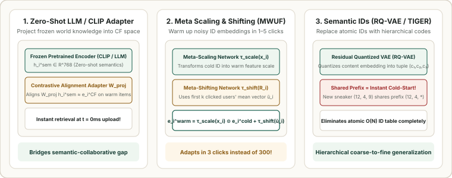

6. Cold-to-Warm Representation Lifecycle: Zero-Shot Priors, Fast Warm-Up & Shared Hierarchical IDs
Simple tabular attributes (Category ID, Brand ID, Price) are often too coarse to distinguish an engaging item from a low-quality upload in the same category. Modern recommendation systems manage an item's representation across three distinct stages of its lifecycle: (1) Zero-Click Content Priors at upload time ($n_i = 0$), (2) Fast Few-Shot Warm-Up during the fragile $1\text{--}10$ click transition phase, and (3) Coarse-to-Fine Shared Hierarchical IDs that eliminate isolated atomic item lookups altogether.

1. Stage 1 ($0$ Clicks): Zero-Shot Content Priors in Behavioral Space
At the exact moment a new item is uploaded ($n_i = 0$), its title, description, image frames, or audio track can be converted into a rich semantic feature vector $\mathbf{h}_i^{\text{sem}} \in \mathbb{R}^{D}$ using any pretrained text or multimodal encoder. However, raw similarity in text/image space measures descriptive similarity rather than co-engagement probability.
Rather than fine-tuning a heavy foundation model on every click batch, systems keep the content features frozen in a feature store and apply a lightweight projection $g(\mathbf{h}_i^{\text{sem}}) \in \mathbb{R}^d$ trained on warm items to match their behavioral embeddings $\mathbf{e}_i^{\text{CF}}$. Linear projections, MLP adapters, or contrastive alignment objectives can be used here so that a brand-new item $i_{\text{new}}$ can be indexed immediately at $\hat{\mathbf{e}}_{i_{\text{new}}} = g(\mathbf{h}_{i_{\text{new}}}^{\text{sem}})$.
2. Stage 2 ($1\text{--}10$ Clicks): Fast Few-Shot Warm-Up from Early Users
Once a cold item receives its first $1\text{--}5$ clicks, a standard per-item ID embedding $\mathbf{e}_i^{\text{cold}}$ has only received a handful of noisy gradient steps and still sits near its random initialization. Waiting for hundreds of clicks before the item representation stabilizes wastes valuable early signal.
Where does the strongest behavioral signal come from during the first few clicks? From the already-warm embeddings of the first $k$ users who engaged with the item:
Because those early users already have well-estimated preference vectors $\mathbf{e}_u$, anchoring or shifting the cold item representation toward the centroid $\bar{\mathbf{u}}_i$ of its earliest fans immediately places the item into the right behavioral neighborhood after just a few interactions. Meta-learning warm-up models (such as MWUF, which learns feature-conditioned scaling and user-centroid shifting functions) or empirical Bayes centroid pooling can be used to automate this few-shot transition.
3. Stage 3: Replacing Atomic IDs with Shared Hierarchical Codes
Why do traditional item IDs ($\text{item\_id} = 8492014$) suffer from cold-start in the first place? Because atomic IDs share zero parameters between items—every new upload adds a brand-new, uninitialized row to the embedding table.
Instead of assigning each item an isolated atomic integer, hierarchical indexing represents every item by a coarse-to-fine tuple of $M$ discrete codes $(c_1, c_2, \dots, c_M)$ where each level refines the previous level's residual:
When a brand-new trail running shoe is uploaded, it is mapped to a hierarchical code tuple such as $(12, 4, 19)$. Even at $0$ clicks, its coarse prefix tokens $c_1 = 12$ (Footwear) and $c_2 = 4$ (Trail Running) already have heavily trained representations shared across thousands of warm items in that category. Hierarchical k-means trees, taxonomy paths, or residual vector quantization models (such as RQ-VAE used in generative retrieval systems like TIGER) can be used to construct these discrete ID tuples.
4. Worked Numerical Example: 2-Level Coarse-to-Fine Hierarchical Coding
Suppose a brand-new item has content vector $\mathbf{r}_0 = [0.85, 0.25]^\top \in \mathbb{R}^2$. Let the Level-1 (coarse) codebook have centroids $\mathbf{e}_{1,1} = [0.80, 0.00]^\top$ (Tech/Keyboards) and $\mathbf{e}_{1,2} = [0.00, 0.80]^\top$ (Apparel), and the Level-2 (fine residual) codebook have $\mathbf{e}_{2,1} = [0.00, 0.20]^\top$ (Wireless) and $\mathbf{e}_{2,2} = [0.00, -0.20]^\top$ (Wired):
| Hierarchy Level $m$ | Input Residual $\mathbf{r}_{m-1}$ | Nearest Codebook Centroid $\mathbf{e}_{m, c_m}$ | Selected Code $c_m$ | Remaining Residual $\mathbf{r}_m = \mathbf{r}_{m-1} - \mathbf{e}_{m, c_m}$ |
|---|---|---|---|---|
| Level 1 (Coarse Category) | $\mathbf{r}_0 = [0.85, 0.25]^\top$ | $\mathbf{e}_{1,1} = [0.80, 0.00]^\top$ (dist $= 0.255$) | $c_1 = 1$ (Keyboards) | $\mathbf{r}_1 = [0.05, 0.25]^\top$ |
| Level 2 (Fine Sub-Type) | $\mathbf{r}_1 = [0.05, 0.25]^\top$ | $\mathbf{e}_{2,1} = [0.00, 0.20]^\top$ (dist $= 0.071$) | $c_2 = 1$ (Wireless) | $\mathbf{r}_2 = [0.05, 0.05]^\top$ (Error $= 0.071$) |
The new item is assigned hierarchical code $(c_1, c_2) = (1, 1)$ and reconstructs to $\hat{\mathbf{r}}_0 = \mathbf{e}_{1,1} + \mathbf{e}_{2,1} = [0.80, 0.20]^\top$—immediately sharing collaborative statistics with all existing items under prefix $(1, 1)$.
5. Reference Implementation: Early-User Warm-Up & Hierarchical Coding
import numpy as np
def hierarchical_quantize(r0: np.ndarray, codebooks: list[np.ndarray]) -> tuple[list[int], np.ndarray]:
"""Maps a cold content vector r0 into a coarse-to-fine tuple of shared discrete codes."""
residual = r0.copy()
codes = []
reconstructed = np.zeros_like(r0)
for cb in codebooks:
dists = np.linalg.norm(cb - residual[None, :], axis=1)
c_m = int(np.argmin(dists))
codes.append(c_m)
reconstructed += cb[c_m]
residual = residual - cb[c_m]
return codes, reconstructed
if __name__ == "__main__":
r0 = np.array([0.85, 0.25])
cb1 = np.array([[0.80, 0.00], [0.00, 0.80]])
cb2 = np.array([[0.00, 0.20], [0.00, -0.20]])
sem_id, r_hat = hierarchical_quantize(r0, [cb1, cb2])
print("Assigned Hierarchical ID tuple (0-indexed):", sem_id)
print("Reconstructed vector r_hat: ", r_hat.round(3))